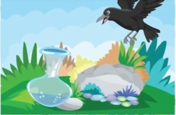
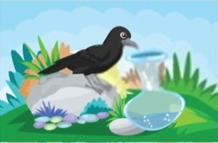
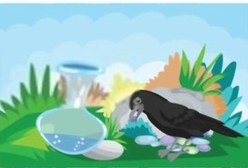
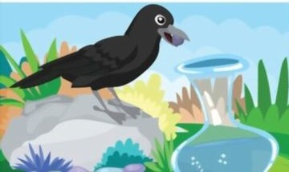
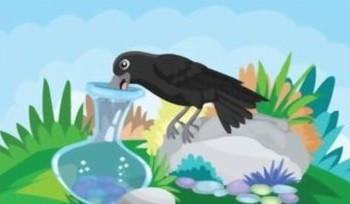

Once upon a time there was a crow. It was hot summer and He felt very thirsty. He flew here and there in search of water.

At last he saw a pot in the garden. There was a little water at the bottom of the pot.

He tried but could not reach the water. He got an idea to rise up the water level.

So, he picked up the small stones nearby and dropped them into the pot one by one.

Now the water level rose up.

He drank the water and flew away happily.